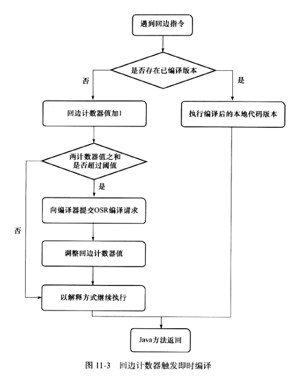

早期（编译器）优化
Java的“编译器”其实是一段“不确定”的过程，因为它可能指以下三种情况：
前端编译器：把.java转变成 .class字节码文件的过程（包括Javac编译器、Eclipse JDT中的增量式编译器（ECJ）
后端运行期编译器（JIT）：将字节码编译为机器码（包括HotSpot VM的C1、C2编译器）
静态提前编译器（AOT，Ahead Of Time Compiler）：直接把*.java编译为机器码（包括GCJ、Excelsior JET）
在这里提到的“编译器”和“编译期”都指第一类编译过程。
Javac这类编译器对代码的运行效率几乎没有任何优化措施，对性能的优化集中到了后端的即时编译器中。这样可以让不是由Javac产生的class文件也享受到编译器优化带来的好处（与上一章末尾MethodHandle的优点一的理由相同）。
Javac编译器对于Java语言的优化在于编码过程，来改善程序员的编码风格和提高编码效率。——“语法糖”
Java中的语法糖
语法糖：指在计算机语言中添加的某种语法，这种语法对语言的功能并没有影响，但更方便程序员使用。
解语法糖：VM运行时不支持这些语法，他们在编译阶段还原回简单的基础语法结构。
①泛型与类型擦除
泛型是JDK1.5的一项新增特性，它的本质是参数化类型的应用，也就是说所操作的数据类型被指定为一个参数（泛型类、泛型接口、泛型方法）。Java中的泛型只是一种伪泛型。
真实泛型：泛型无论在源码、编译后的中间语言还是运行期的CLR中都是切实存在的，List < int>和List < String> 就是两个不同的类型，它们在运行期生成，有自己的虚方法表和类型数据。这种实现称为类型膨胀，如C#中的泛型。
伪泛型：只在源码中存在，在编译后的字节码文件中就已经替换为原来的原生类型（Row Type裸类型）了，并且在相应的地方插入了强制转型代码，对运行期的Java来说，List < int>和List < String>就是同一个类，所以泛型就是Java中的一颗语法糖。这种实现称为类型擦除。如Java中的泛型。
2
3
4
5
6
7
8
9
10
> public class GenericTypes{
> public static void method(List<String> list){
> System.out.println("invoke method(List<String> list)");
> }
> public static void method(List<Integer> list){
> System.out.println("invoke method(List<Integer> list)");
> }
> }
>由于List < String>和List < Integer>在经过Java编译后都被擦除了，变成了一样的原生类型List < E>，两个方法的签名变得一摸一样，所以无法编译执行。
2
3
4
5
6
7
8
9
10
11
12
13
14
15
16
17
> public class GenericTypes{
> public static String method(List<String> list){
> System.out.println("invoke method(List<String> list)");
> return "";
> }
> public static int method(List<Integer> list){
> System.out.println("invoke method(List<Integer> list)");
> return 1;
> }
>
> public static void main(String[] args){
> method(new ArrayList<String>());
> method(new ArrayList<Integer>());
> }
> }
>执行结果：
2
3
> invoke method(List<Integer> list)
>
方法重载要求方法具备不同的特征签名，返回值不包含在方法的特征签名中，故返回值不参与重载选择。
但在Class文件格式中，只要描述符不同的两个方法就可以共存，所以名称和特征签名相同，但返回值不同的两个方法可以合法共存于一个Class中。
所以只能添加2个本不需要的返回值才能完成重载，这样不优雅且存在语义上的混乱。
② 自动装箱、拆箱与遍历循环
直接看代码。
原始代码：
2
3
4
5
6
7
8
9
10
> List<Integer> list = Array.asList(1,2,3,4);
> /*如果在JDK1.7中，还有另一颗语法糖，可以简写成List<Integer> list = [1,2,3,4]。*/
> int sum = 0;
> for (int i:list){
> sum += 1;
> }
> System.out.println(sum);
> }
>编译之后再反编译出的代码：
2
3
4
5
6
7
8
9
10
11
12
13
14
15
> List list = Array.asList(new Integer[]{
> Integer.valueOf(1),
> Integer.valueOf(2),
> Integer.valueOf(3),
> Integer.valueOf(4), })
>
> int sum = 0;
> for (Iterator localIterator = list.iterator(); localIterator.hasNext();){
> int i = ((Integer)localIterator.next()).intValue();
> sum += 1;
> }
> System.out.println(sum);
> }
>以上代码一共包含了泛型、自动装箱、自动拆箱、遍历循环与变长参数5种语法糖。
自动装箱、拆箱在编译之后被转换成了对应的包装和还原方法（Integer.valueOf()和Integer.intValue()）
遍历循环则还原成了迭代器的实现（遍历循环需要被遍历的类实现Iterable接口）
变长参数变成了一个数组类型的参数
③ 条件编译
Java中的条件编译方法是使用条件为一个常量的if语句
2
3
4
5
6
7
8
> if(true){
> System.out.println("1");
> } else{
> System.out.println("2");
> }
> }
>编译之后再反编译出的代码：
2
3
4
> System.out.println("1");
> }
>只能使用条件为常量的if语句才能达到上述效果。
如果使用常量与其他带条件判断能力的语句搭配（如while(true)），则可能编译错误（编译报错：Unreachable code）
其他语法糖还有内部类、枚举类、断言语句、对枚举和字符串的switch支持（JDK1.7）、try语句中定义和关闭资源（JDK1.7）等。
晚期（运行期）优化
即时编译器：在部分商业Java VM中，Java程序最初是通过解释器进行解释执行的，当虚拟机发现某个方法或代码块的运行特别频繁时，就会把这些代码认定为”热点代码“（Hot Spot Code），为了提高热点代码的执行效率，在运行时，VM会把这些代码编译成与本地平台相关的机器码，并进行各种层次的优化，完成这个任务的编译器称为即时编译器（Just In Time Compiler）
① 解释器与编译器
许多主流的商业VM，都同时包含解释器和编译器。
解释器和编译器各有各的优势。
解释器：
当程序需要迅速启动和执行时，解释器可以立即执行，省去编译的时间
当程序运行环境中内存资源限制较大时，可以节约内存
可作为编译器激进优化时的一个”逃生门“（当激进优化不成立时，可以通过逆优化退回到解释状态继续执行）
编译器：
在程序运行后，把代码编译成本地代码，可以获取更高的执行效率。
内存限制不大时，可编译执行来提升效率。
HotSpot虚拟机内置了两个即时编译器：Client 编译器和Server编译器，简称C1和C2编译器，使用哪个编译器决定于JVM是运行client还是server模式，但是无论使用C1还是C2，都可使用 java -Xmixed命令切换混合模式（默认）、java -Xint切换interpreted解释器模式、java -Xcomp切换compiled编译器模式
解释器可以为编译器收集性能监控信息
HotSpot虚拟机采用分层编译的策略，层数越高，编译程度越高
C1编译速度更快，C2编译质量越高
②编译对象和触发条件
在运行过程中会被即时编译器编译的“热点代码”有两类：
1 . 被多次调用的方法
2. 被多次执行的程序体（仍以整个方法作为编译对象，这种编译方式因为编译发生在方法执行过程中，因此形象地被称为栈上替换（On Stack Replacement OSR编译），即方法栈帧还在栈上，方法就被替换了）
判断是否是热点代码，是否需要即时编译，这样的行为叫做“热点探测”(Hot Spot Detection)：
基于采样的热点探测：周期性检查方法栈顶，经常出现的即“热点方法”。
▶优点：实现简单，高效，容易获取方法调用关系（将调用堆栈展开即可）。
▶缺点：热度确认不精确，容易受到线程阻塞或别的外界因素影响。
基于计数器的热点探测：为每个方法（甚至是代码块）建立计数器，统计方法的执行次数，次数超过一定阈值就认为它是“热点方法”。
▶优点：精确、严谨
▶缺点：实现麻烦、不能直接获取到方法的调用关系
HotSpot虚拟机使用的是第二种——基于计数器的热点探测，因此它为每个方法准备了两类计数器：方法调用计数器（统计多次调用的方法）和回边计数器（统计被多次执行的程序体），两个计数器都会设置一个阈值，当计数器超过该阈值就会触发编译，对于第一类热点代码采用的是普通的JIT编译，对于循环体采用的是OSR编译
如果不做任何设置，方法调用统计器统计的并不是方法调用的绝对次数，而是一个相对的执行频率，也就是超过一段时间限度后，若方法调用器仍未达到规定的阈值，则该数量会减半，这个过程称为方法调用计数器热度的衰减。
回边计数器的作用是统计一个方法中循环体代码执行的次数，在字节码中遇到控制流向后跳转的指令称为“回边”。回边计数器的阈值是通过计算公式计算出来的。对于循环体的场景，如果计数器的和超过阈值后，将会提交一个OSR编译请求，并且把回边计数器的值降低一些，以便继续在解释器中执行循环，等待编译器输出编译结果。回边计数器没有热点衰减过程，因此统计的是绝对次数

③ 编译优化技术